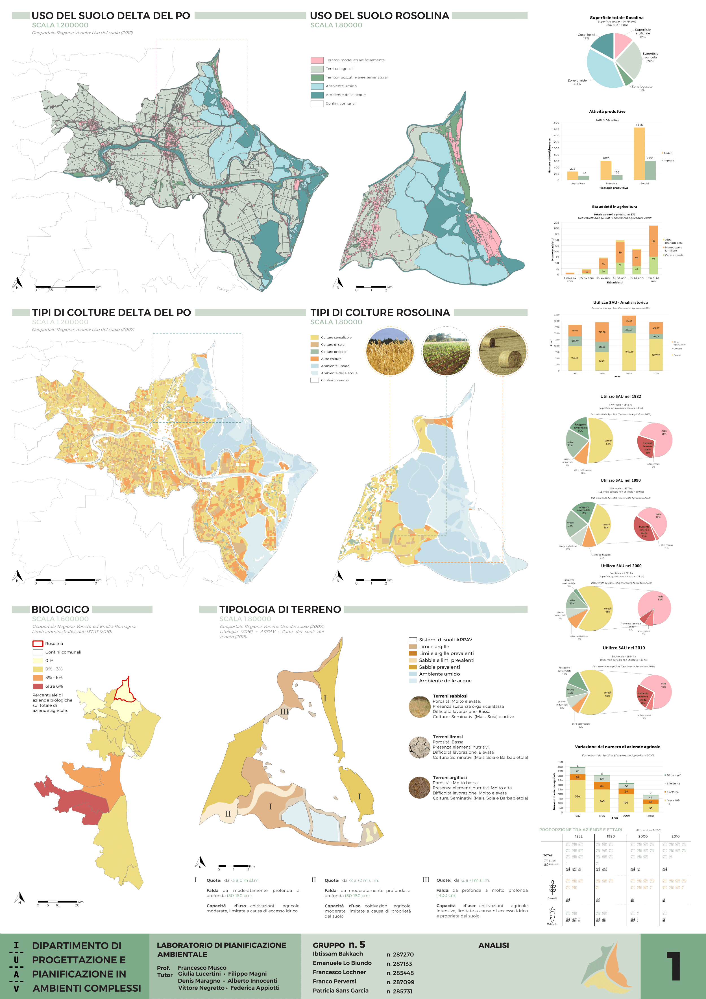
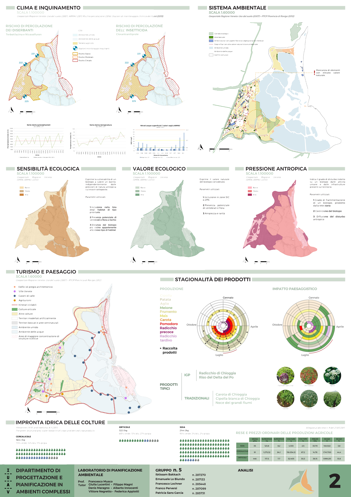
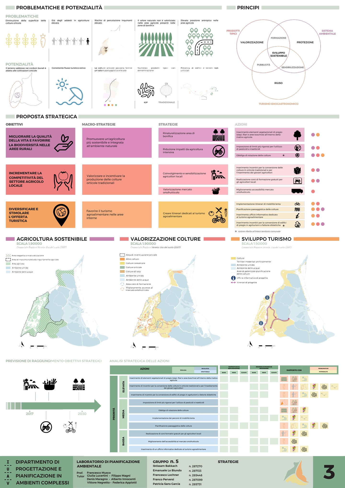
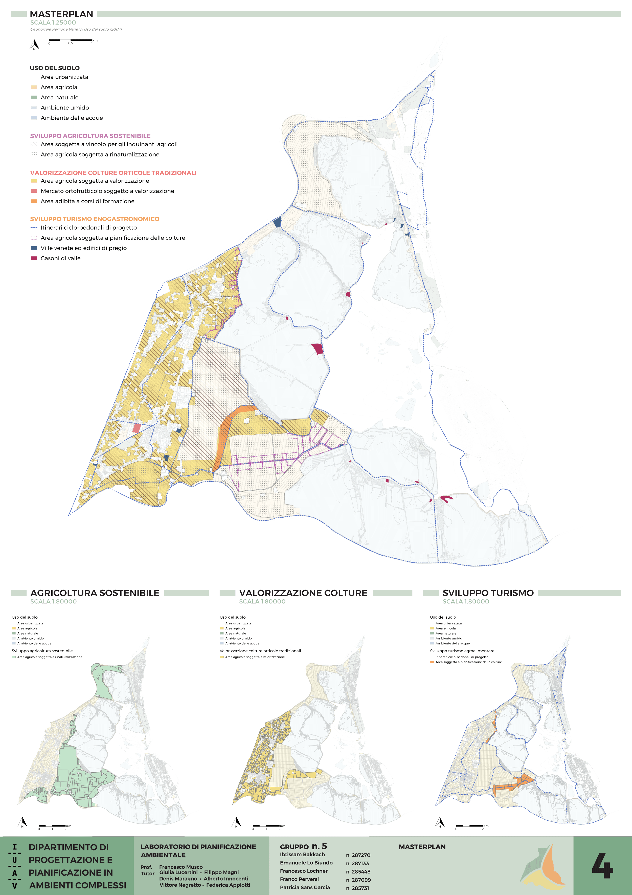
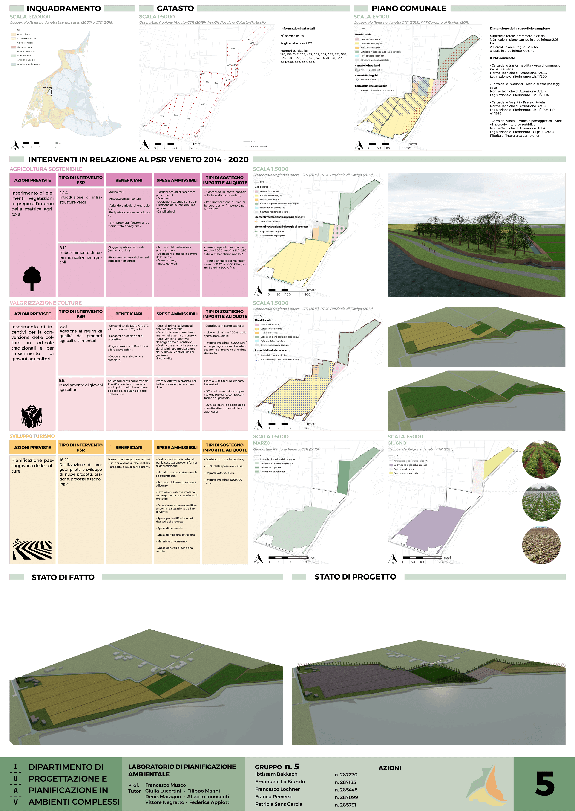

Analysis and planning proposal for Rosolina (RO) agricoltural sector
The goal of the laboratory was the realization of a developement proposal of agricultural sector for the Municipality of Rosolina (RO). The first part of the project focuses on the anlysis of the current situation that allowed to identify the main problems and potentialities of the study area. The project proposal is composed of three main phases: strategies, masterplan and actions. The strategies define the general lines that the project will follow, the masterplan identifies more specifically the lines of action from a geographical point of view and the actions panel describes an example of how the project could be implemented in a pilot area
Analysis
 Strategy
Masterplan
Actions
